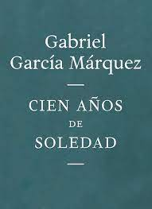
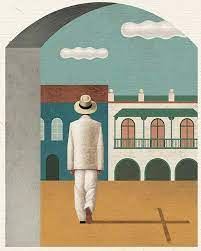

El señor de las moscas
El toque de caracola

El muchacho rubio, en medio de una selva envuelta en vapor, desciende hacia una laguna arrastrando su suéter escolar. A pesar del calor, siente su camisa pegada a la piel. Mientras avanza, un pájaro colorido emprende vuelo y lanza un chillido desagradable. El muchacho lo sigue, pidiendo que espere, cuando una voz desde la maleza revela que alguien está atrapado. La lluvia comienza a caer mientras el muchacho rubio se detiene. La voz, que pertenece a un chico gordo y raspado, sale de la maleza. Ambos confirman que están en una isla después de un accidente aéreo. El gordito pregunta por el piloto y otros pasajeros, preocupado por la posibilidad de supervivientes. El muchacho rubio, mirando hacia el arrecife, sugiere que no hay adultos presentes y que están solos en la isla, desconociendo si hay otros sobrevivientes entre los chicos del avión.
Cien años de soledad
Primer capitulo

Muchos años después, frente al pelotón de fusilamiento, el coronel Aureliano Buendía había de recordar aquella tarde remota en que su padre lo llevó a conocer el hielo. Macondo era entonces una aldea de veinte casas de barro y cañabrava construidas a la orilla de un río de aguas diáfanas que se precipitaban por un lecho de piedras pulidas, blancas y enormes como huevos prehistóricos. El mundo era tan reciente, que muchas cosas carecían de nombre, y para mencionarlas había que señalarías con el dedo. Todos los años, por el mes de marzo, una familia de gitanos desarrapados plantaba su carpa cerca de la aldea, y con un grande alboroto de pitos y timbales daban a conocer los nuevos inventos. Primero llevaron el imán. Un gitano corpulento, de barba montaraz y manos de gorrión, que se presentó con el nombre de Melquiades, hizo una truculenta demostración pública de lo que él mismo llamaba la octava maravilla de los sabios alquimistas de Macedonia. Fue de casa en casa arrastrando dos lingotes metálicos, y todo el mundo se espantó al ver que los calderos, las pailas, las tenazas y los anafes se caían de su sitio, y las maderas crujían por la desesperación de los clavos y los tornillos tratando de desenclavarse, y aun los objetos perdidos desde hacía mucho tiempo aparecían por donde más se les había buscado, y se arrastraban en desbandada turbulenta detrás de los fierros mágicos de Melquíades. «Las cosas, tienen vida propia -pregonaba el gitano con áspero acento-, todo es cuestión de despertarles el ánima.» José Arcadio Buendía, cuya desaforada imaginación iba siempre más lejos que el ingenio de la naturaleza, y aun más allá del milagro y la magia, pensó que era posible servirse de aquella invención inútil para desentrañar el oro de la tierra. Melquíades, que era un hombre honrado, le previno: «Para eso no sirve.» Pero José Arcadio Buendía no creía en aquel tiempo en la honradez de los gitanos, así que cambió su mulo y una partida de chivos por los dos lingotes imantados. Úrsula Iguarán, su mujer, que contaba con aquellos animales para ensanchar el desmedrado patrimonio doméstico, no consiguió disuadirlo. «Muy pronto ha de sobrarnos oro para empedrar la casa», replicó su marido. Durante varios meses se empeñó en demostrar el acierto de sus conjeturas. Exploró palmo a palmo la región, inclusive el fondo del río, arrastrando los dos lingotes de hierro y recitando en voz alta el conjuro de Melquíades. Lo único que logró
cronicas de una muerte anunciada
prologo

Hace un par de años, en su casa de Bogotá, al frente del Parque de la 88, le pregunté a García Márquez si nunca había sentido la tentación de escribir una novela negra. «Ya la escribí —me dijo—, es Crónica de una muerte anunciada». Afuera, sobre el césped verde, amos y perros daban el paseo del mediodía bajo un sol radiante, raro en Bogotá para el mes de febrero. «Lo que sucede es que yo no quise que el lector empezara por el final para ver si se cometía el crimen o no —continuó diciendo—, así que decidí ponerlo en la frase inicial del libro». Era la primera vez que veía a García Márquez. Yo había aprendido a amar la literatura por haber leído, entre otras cosas, sus novelas. Estaba muy emocionado escuchándolo. «De este modo agregó— la gente descansa de la intriga y puede dedicarse a leer con calma qué fine lo que pasó». Dicho esto enumeró una larga serie de historias de género negro en la literatura y concluyó que su preferida era Edipo Rey, de Sófocles: «Porque al final uno descubre que el detective y el asesino son la misma persona». A García Márquez le gusta hablar de literatura. Quedan pocos escritores a los que les guste hablar de literatura. Pero Crónica de una muerte anunciada es, sobre todo, una exacta y eficaz pieza de relojería. Los hechos que rodean la muerte de Santiago Nasar, en la madrugada siguiente al fallido matrimonio de Bayardo San Román con Ángela Vicario, van siendo reconstruidos uno a uno por el narrador, agregando cada vez, con los testimonios de los protagonistas, la información necesaria para que el muro se levante en equilibrio, la curiosidad del lector quede azuzada y se forme una ambiciosa historia coral, nutrida de múltiples voces. Las voces de todos aquellos que, años después, recuerdan, confiesan u ocultan algún detalle nuevo del crimen, algún matiz que completa la tragedia. Porque al fin y al cabo Crónica de una muerte anunciada es también una tragedia moderna. Los personajes son empujados a la acción por fuerzas que no controlan. Los hermanos Vicario, los asesinos, se ven obligados a cumplir un destino, que es el de lavar la honra de su hermana, matando a Santiago Nasar. Pero ninguno de los dos quiere hacerlo, y, como dice el narrador, «hicieron mucho más de lo que era imaginable para que alguien les impidiera matarlo, y no lo consiguieron». El coronel Aponte, el alcalde, alertado por las voces, los desarma; pero es inútil, pues es demasiado temprano y los hermanos tienen tiempo de reponer con desgano los cuchillos. Clotilde Armenta, la propietaria de la tienda donde los Vicario esperan el amanecer, llega incluso a sentir lástima por ellos y le suplica al alcalde que los detenga, «para librar a esos pobres muchachos del horrible compromiso que les ha caído encima». Algo más fuerte que la voluntad de los hombres mueve los hilos. Los vecinos de la familia Nasar, y en realidad todo el pueblo, saben que Santiago va a ser asesinado e intentan avisarle, pero ninguna de las estafetas llega a su destino